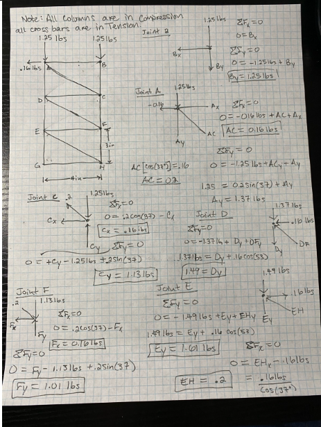
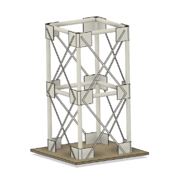
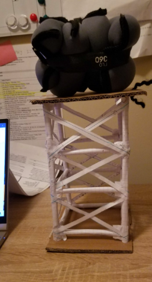

A load-bearing tower built from wrapped notebook paper, designed to hold 5 lb within a 9 × 4 in envelope. The interesting engineering isn't the tower — it's the analysis behind it: material testing to pick the members, then a full method-of-joints truss solution to verify the structure.
Project Overview
Starting from in-class material testing, the team measured how paper-tube diameter and wrap count affected load capacity, then used that data to select members. I worked the statics: treating the tower as a truss, I solved each joint with ΣF = 0 to find the internal forces, identifying which members carry tension (cross-braces) and which carry compression (columns). The built tower held its target load.
- Analysis
- Method of joints, tension/compression
- Material
- 0.25 in tube, 3 wraps — held 10.1 lb
- Envelope
- ≤ 9 in tall, ≤ 4 in wide
- Result
- Supported the 5 lb target load
Truss statics — method of joints

Every joint solved by hand: with all columns in compression and all cross-bars in tension, I resolved forces at joints A through H to find each member's internal load — the same statics fundamentals that scale up to real structural and mechanical design.
Design & material testing


Material testing showed a 0.25 in tube with 3 wraps held the most weight (10.1 lb) — counterintuitively outperforming larger diameters, since added weight came only from more wraps, not width. That drove the member selection for the final build.
Built & load-tested

The completed tower supported its intended load. In the optimization write-up I noted the cross-braces sat slightly loose, reducing their bracing effect — next iteration would tune brace lengths for a tighter, fully engaged truss.